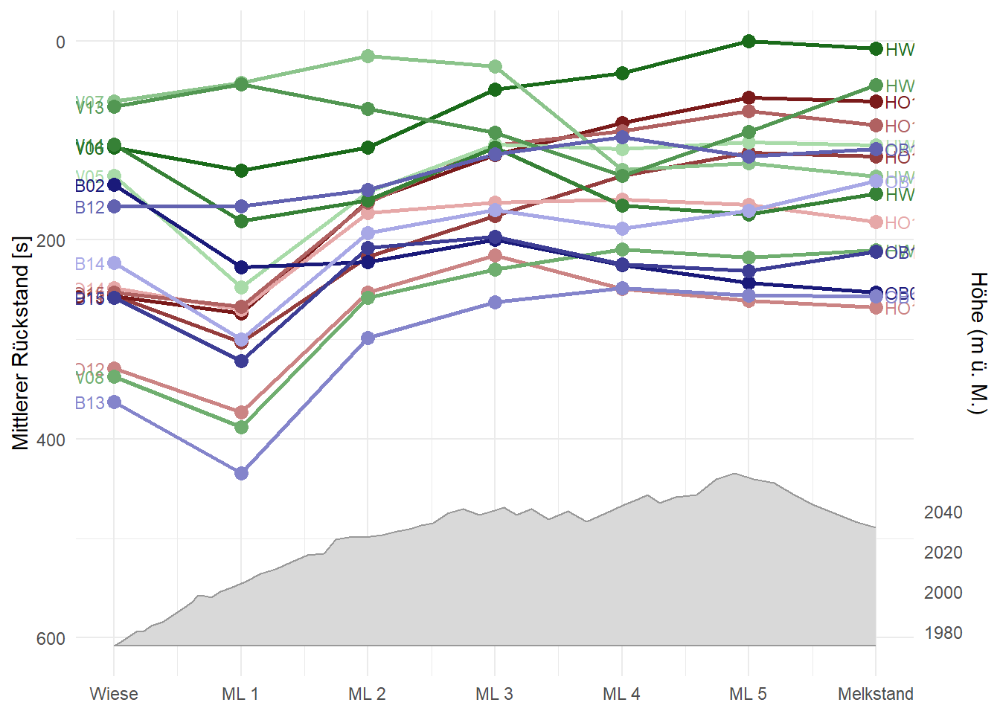
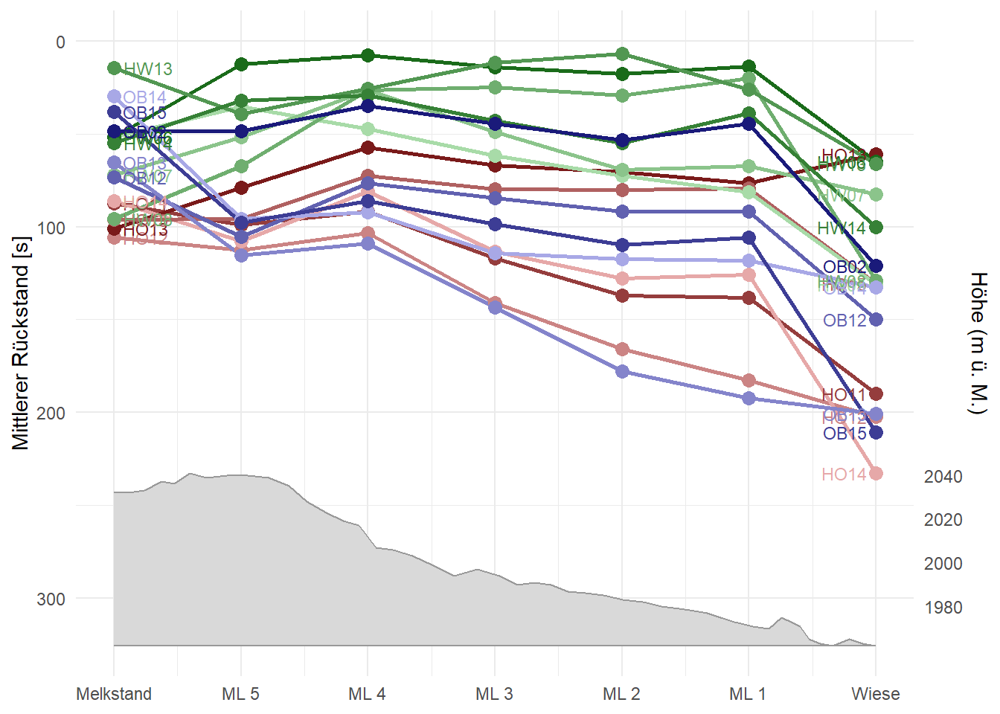
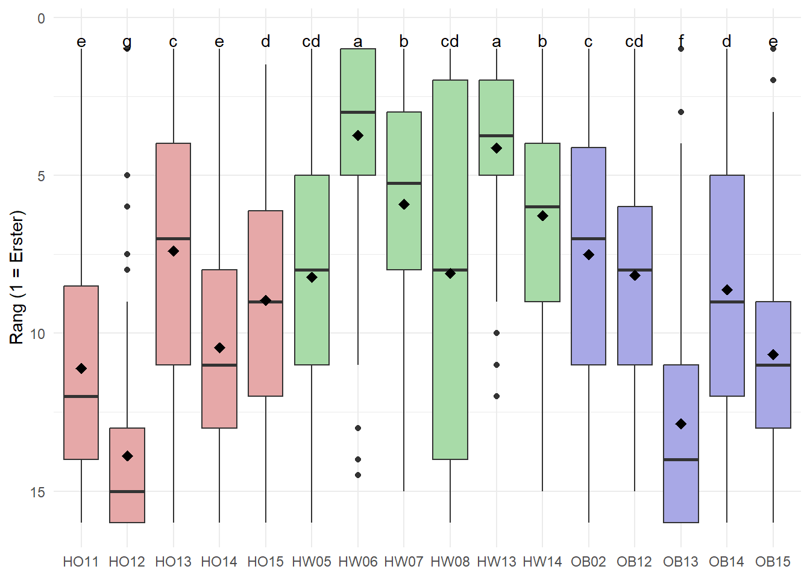
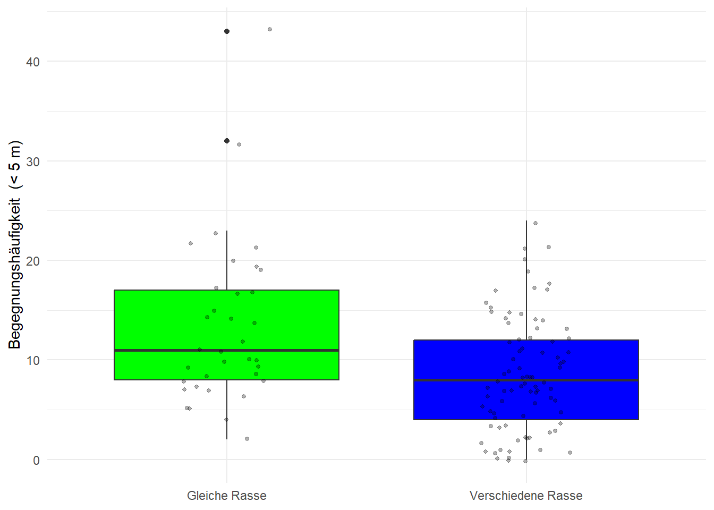

library("sf")Linking to GEOS 3.13.1, GDAL 3.11.4, PROJ 9.7.0; sf_use_s2() is TRUElibrary("tidyverse")Warning: Paket 'dplyr' wurde unter R Version 4.5.3 erstellt── Attaching core tidyverse packages ──────────────────────── tidyverse 2.0.0 ──
✔ dplyr 1.2.1 ✔ readr 2.1.5
✔ forcats 1.0.1 ✔ stringr 1.6.0
✔ ggplot2 4.0.0 ✔ tibble 3.3.0
✔ lubridate 1.9.4 ✔ tidyr 1.3.1
✔ purrr 1.1.0 ── Conflicts ────────────────────────────────────────── tidyverse_conflicts() ──
✖ dplyr::filter() masks stats::filter()
✖ dplyr::lag() masks stats::lag()
ℹ Use the conflicted package (<http://conflicted.r-lib.org/>) to force all conflicts to become errorslibrary("dplyr")
library("purrr")
library("stringr")
library("tmap")
library("lubridate")
library("zoo")
Attache Paket: 'zoo'
Die folgenden Objekte sind maskiert von 'package:base':
as.Date, as.Date.numeric# Eine liste aller .gpkg Dateien im Ordner erstellen:
gpkg_files <- list.files("GPS Path data/", pattern = "\\.gpkg$", full.names = TRUE)
# Hilfsfunktion: liest einen Layer ein.
f_layer <- function(filename,layer) { #Erstellt eine Funktion mit dem Nahmen f_layer, welche eiun filename und ein layername als Imput braucht.
st_read(filename, layer = layer, quiet = TRUE) |> # Liest einen Layer ein.
mutate(
quelle_file = basename(filename), # Fügt den Dateinamen in einer Spalte hinzu.
quelle_layer = layer # Fügt den Layername in einer Spalte hinzu.
)
}
# 2.Hilfsfunktion Liest ein File ein (alle Layer) und erstellt darau ein Datea Frame im long format.
f_files <- function(filename) { #Erstellt eine Funktion mit dem Nahmen f_file welche eiun filename als Imput braucht.
layer_names <- st_layers(filename)$name # Listet alle Layer auf welche im file enthalten sind.
map_dfr(layer_names, \(layer) f_layer(filename, layer)) # Nimt die Liste der Layer und führt füe jedes element die Funktion f_layer aus. (\(layer)´weil map_dfr eigendlich eine Funktion mit nur einem Imput erwartet.)
}
# Alle Date Einlesen in eine grosse Tabelle (long Format)
Kuh_Daten <- map_dfr(gpkg_files, f_files) #Führt die Einlese Funktion für alle gpkg Files durch und fügt die Daten in eiener einzigen Tabelle zusammen.
###############################################################################
###############################################################################
# Datenstruktur
alle_daten <- Kuh_Daten |>
mutate(
Time = as.POSIXct(Time, format = "%Y-%m-%d %H:%M:%S", tz = "UTC")
)
###############################################################################
# Konvinience Spalten hinzufügen:
# RASSE
alle_daten <- alle_daten |>
mutate(
Rasse = str_extract(quelle_file, "(?<=-)[A-Z]{2}")
)
# ID pro Kuh und Rasse (Bsp.: R1-HO01 = 01)
alle_daten <- alle_daten |>
mutate(ID = str_extract(quelle_file, "\\d{2}(?=\\.gpkg)")
)
# Rasse und ID
alle_daten <- alle_daten |>
mutate(Rasse_ID = str_extract(quelle_file, "(?<=-)\\w+(?=\\.gpkg)")
)
# Time > HMS = nur hour, minute und seconds
alle_daten <- alle_daten |>
mutate(HMS = str_extract(alle_daten$Time, "\\d{2}:\\d{2}:\\d{2}"))
# Spalte mit Versuchsgruppe hinzufügen:
alle_daten$Grupe <- substr(alle_daten$quelle_file, 1, 2)
# Spalte mit Tageszeit:
alle_daten$Tageszeit <- substr(alle_daten$quelle_layer,7,7)
# Hilfsfunktionen Definieren:
distance_by_element <- function(later, now){
as.numeric(
st_distance(later, now, by_element = TRUE)
)
}
# Distanz zum Nächsten Punkt berechenen
alle_daten <- alle_daten |>
group_by(quelle_layer, Rasse_ID) |>
arrange(Time, .by_group = TRUE) |>
mutate(
steplength = mapply(distance_by_element, geom, lead(geom))
)
#####################################################
#####################################################
###### Weg definieren: ############################
Wander_Weg <- alle_daten |>
filter(quelle_layer == "06-25-A" & #Erste Kuh die diesen Weg genommen hat dient als grundlage
Hour < 17 &
Rasse_ID == "HO01"
) |>
ungroup() |>
arrange(Time) |>
filter(is.na(steplength) | steplength > 5) |> # mind. 5m Bewegung
mutate(
x = st_coordinates(geom)[, 1],
y = st_coordinates(geom)[, 2],
x = rollmean(x, k = 3, fill = "extend"), # Weg glätten (mittelwert über ein fenster von 3 bilden)
y = rollmean(y, k = 3, fill = "extend")
) |>
st_drop_geometry() |>
st_as_sf(coords = c("x", "y"), crs = 2056) |>
summarise(geometry = st_cast(st_combine(geometry), "LINESTRING"))
Strasse <- alle_daten |>
filter(quelle_layer == "06-27-M" & #Erste Kuh die diesen Weg genommen hat dient als grundlage
Hour < 7&
Rasse_ID == "HO01"
) |>
ungroup() |>
arrange(Time) |>
filter(is.na(steplength) | steplength > 5) |> # mind. 5m Bewegung
mutate(
x = st_coordinates(geom)[, 1],
y = st_coordinates(geom)[, 2],
x = rollmean(x, k = 3, fill = "extend"), # Weg glätten
y = rollmean(y, k = 3, fill = "extend")
) |>
st_drop_geometry() |>
st_as_sf(coords = c("x", "y"), crs = 2056) |>
summarise(geometry = st_cast(st_combine(geometry), "LINESTRING"))
# Hilfsfunktion für Senkrechte Linien:
senkrechte_linie <- function(weg_coords, idx, laenge = 100, fenster = 3) {
idx1 <- idx - fenster # Punkte am anfuang und ende das Fensters ermitteln.
idx2 <- idx + fenster
dx <- weg_coords[idx2, 1] - weg_coords[idx1, 1] #Veränderung in x und y richtung feststellen.
dy <- weg_coords[idx2, 2] - weg_coords[idx1, 2]
len <- sqrt(dx^2 + dy^2) # Länge des Vektors ermitteln.
perp_x <- -dy / len # Vektor drehung und normierung auf Länge 1.
perp_y <- dx / len
mx <- weg_coords[idx, 1] #Position der Line in der mitte des Fensters festlegen.
my <- weg_coords[idx, 2]
st_linestring(rbind( # Linie einfügen
c(mx - perp_x * laenge/2, my - perp_y * laenge/2),
c(mx + perp_x * laenge/2, my + perp_y * laenge/2)
))
}
# Koordinaten System transformieren:
str_coords <- st_coordinates(Strasse$geometry[[1]])
str_coords_4326 <- st_coordinates(st_transform(Strasse, 4326))
# Koordinaten für Start und Ende des Weges ab Karte festgelegt:
S_E <- c(9.7895,9.8000)
#Nächster Punkt zu dieser Koordinate finden:
S_E_idx <- sapply(S_E, function(d) which.min(abs(str_coords_4326[, 1] - d)))
# Start und Endline genirieren:
Start_Ende <- lapply(seq_along(S_E_idx), function(i) {
senkrechte_linie(str_coords, S_E_idx[i], laenge = 800, fenster = 3)
}) %>%
st_sfc(crs = st_crs(2056)) %>%
st_sf(S_E = 1:2, geometry = .)
# Hilfs Funktion für Messlinien erstellen:
mess_linien_erstellen <- function(weg, lon_min = S_E[1], lon_max = S_E[2], n = 5, laenge = 100, fenster = 2) {
# Wählt nur den weg aus:
weg_gefiltert <- weg |>
st_transform(4326) |>
st_cast("POINT") |>
filter(st_coordinates(geometry)[, 1] < lon_max,
st_coordinates(geometry)[, 1] > lon_min) |>
st_transform(2056)
#Liest die Kordinaten aus
weg_coords <- st_coordinates(weg_gefiltert$geometry)
# Berechenet die Kummulierte distanz:
kum_dist <- c(0, cumsum(sqrt(diff(weg_coords[,1])^2 + diff(weg_coords[,2])^2)))
gesamt_dist <- max(kum_dist)
#Rechnet die Abschnittlängen aus:
ziel_dist <- seq(gesamt_dist / (n+1), gesamt_dist * n/(n+1), length.out = n)
mess_idx <- sapply(ziel_dist, function(d) which.min(abs(kum_dist - d))) # Wählt das nächste Element aus.
#Erstellt die Linien:
lapply(seq_along(mess_idx), function(i) {
senkrechte_linie(weg_coords, mess_idx[i], laenge = laenge, fenster = fenster)
}) %>%
st_sfc(crs = st_crs(weg)) %>% # Setzt das richtige koordinatensystem
st_sf(messline = 1:n, geometry = .) #Erstellt eine Liste von geometrie Objekten.
}
# Messlinien erstellen:
ww_messline <- mess_linien_erstellen(Wander_Weg)
str_messline <- mess_linien_erstellen(Strasse)
############################################################
############################################################
# Datenbereinigung:
# Unnötige Layer entfernen:
daten_ber <- alle_daten[!endsWith(alle_daten$quelle_layer, "lns"), ]
# Der datensatz enthält am 14.7 Morgens nur eine Kuh, weglassen:
daten_ber <- daten_ber[daten_ber$quelle_layer != "07-14-M", ]
# Daten Gruppe 3 für die weitera Analyse auswählen:
# daten_ber <- daten_ber [daten_ber$Grupe == "R1",]
# daten_ber <- daten_ber [daten_ber$Grupe == "R2",]
daten_ber <- daten_ber [daten_ber$Grupe == "R3",]
# Alle Daten die mit weniger alls 4 Sateliten bestimmt wurden Entfernen. (min 4 Sateliten sind für eine genaue position notwendig.)
daten_ber <- daten_ber [daten_ber $NSat >"3",]
# NA daten entfernen:
daten_ber <- daten_ber[!is.na(daten_ber$NSat),]
# Hilfsfunktion definieren:
difftime_secs <- function(later, now) {
as.numeric(difftime(later, now, units = "secs"))
}
# Hilofsfunktion um ein segment aus 2 Punkten als Linestring zu definieren: (Um das auf den Punkt folgende segment zu bestimmen)
segment <- function(p1, p2) {
tryCatch(
st_linestring(rbind(st_coordinates(p1), st_coordinates(p2))),
error = function(e) st_linestring() # falls Fehler → leere Linie zurückgeben
)
}
# Zu hohe Geschwindikeiten raus filtern (Kuh nicht schneller als 25 Kmh im Alpinen gelände):
repeat { #Repetiert das ganze fals ausreisser zu nahe aneinander liegen um erfasst zu werden.
n <- nrow(daten_ber)
cat("Punkte:", n, "\n")
daten_ber <- daten_ber |>
group_by(quelle_layer, Rasse_ID) |>
mutate(
timelag = difftime_secs(lead(Time), Time),
segment = st_sfc(mapply( segment, geom, lead(geom), SIMPLIFY = FALSE), #Nach Punkt folgendes Segment generieeren und Länge davon berechnen.
crs = st_crs(daten_ber)),
steplength = as.numeric(st_length(segment)),
speed = steplength / timelag
) |>
filter(
(is.na(speed) | speed < 7) &
(is.na(lag(speed)) | lag(speed) < 7)
)
if (nrow(daten_ber) == n) break
}Punkte: 96131 # Start und End der Wanderung pro Tier feststellen:
S_E_Zeit_pro_Kuh <- daten_ber |>
mutate(
crosses_start = lengths(st_intersects(segment, Start_Ende[1, ])) > 0,
crosses_end = lengths(st_intersects(segment, Start_Ende[2, ])) > 0
) %>%
filter(crosses_start | crosses_end) %>% # Nur einträge behalten die mindestens 1 = True haben
st_drop_geometry() %>%
group_by(quelle_layer, Rasse_ID) |>
arrange(Time, .by_group = TRUE) |>
mutate(
start_hin_Weg = crosses_start & lead(crosses_end, default = FALSE),
start_rück_Weg = crosses_end & lead(crosses_start, default = FALSE),
end_hin_Weg = lag(start_hin_Weg, default = FALSE),
end_rück_Weg = lag(start_rück_Weg, default = FALSE)
)
# Start und End Zeitpunkte pro Layer feststellen:
S_E_Zeit <- S_E_Zeit_pro_Kuh |>
group_by(quelle_layer) |>
summarise(
start_hin = min(Time[start_hin_Weg], na.rm = TRUE),
ankunft_hin = max(Time[end_hin_Weg], na.rm = TRUE),
start_rück = min(Time[start_rück_Weg], na.rm = TRUE),
ankunft_rück = max(Time[end_rück_Weg], na.rm = TRUE),
.groups = "drop"
)
# Filtern nach Zeit in der die Kühe auf dem Weg Wahren (mit 2Minuten Buffer)
daten_weg <- daten_ber |>
left_join(S_E_Zeit, by = "quelle_layer") |>
mutate(
auf_hinweg = Time >= (start_hin - minutes(2)) & Time <= (ankunft_hin + minutes(2)),
auf_rückweg = Time >= (start_rück - minutes(2)) & Time <= (ankunft_rück + minutes(2))
) |>
filter(auf_hinweg | auf_rückweg) |>
mutate(
richtung = case_when(
auf_hinweg & !auf_rückweg ~ "Hinweg",
auf_rückweg & !auf_hinweg ~ "Rückweg")
)%>%
dplyr::select(-auf_hinweg,-auf_rückweg,-start_hin,-start_rück,-ankunft_hin,-ankunft_rück)
# Sauen welche Kuh wann den weg Vollständig absolviert hat:
vollstaendige_wege <- S_E_Zeit_pro_Kuh |>
group_by(quelle_layer, Rasse_ID) |>
summarise(
hin_komplett = any(start_hin_Weg),
rück_komplett = any(start_rück_Weg),
.groups = "drop"
)
# Nur Halb absolvierte Wege raus filtern:
daten_weg <- daten_weg |>
left_join(vollstaendige_wege, by = c("quelle_layer", "Rasse_ID")) |>
filter(
(richtung == "Hinweg" & hin_komplett) |
(richtung == "Rückweg" & rück_komplett)
) |>
dplyr::select(-hin_komplett, -rück_komplett)
####
####
# Liste der Daten für diesen Plot Erstelen:
Plot_Daten <- c(
"Strasse",
"Wander_Weg",
"Start_Ende",
"ww_messline",
"str_messline"
)
# Weg + Start und Ende und Messlinein Plotten.
tmap_mode("plot")ℹ tmap modes "plot" - "view"
ℹ toggle with `tmap::ttm()`Grafik_1 <- tm_shape(Wander_Weg) + tm_lines(col = "black") +
tm_shape(Strasse) + tm_lines(col = "blue") +
tm_shape(Start_Ende[1, ]) + tm_lines(col = "green") +
tm_shape(Start_Ende[2, ]) + tm_lines(col = "red")+
tm_shape(ww_messline) + tm_lines(col = "darkgreen") +
tm_shape(str_messline) + tm_lines(col = "darkgreen")
tmap_save(Grafik_1, "Grafik_1.html", width = 10, height = 8, units = "in", dpi = 300)Interactive map saved to C:\Users\Jonas\Documents\10.0_Master\5.0_Paterns_and_Trends\R-Uebungen\PAT_Kuh_guyerste_amachjon\Grafik_1.html#####
#####
# Herausfinden Wann welcher weg genommen wurde:
# # Pro Layer und Richtung die Route mit der geringeren mittlerer Distanz zum Routentrajektoer herausfinden und zuweisen:
route_pro_layer <- daten_weg |>
filter( # Daten punkte auswählen welche auf dem Weg liegen: (zwoschen start unde ende)
st_coordinates(st_transform(geom, 4326))[, 1] > S_E[1],
st_coordinates(st_transform(geom, 4326))[, 1] < S_E[2]
) |>
mutate( # Distanz jedes Punktes zu beiden Routen berechnen:
dist_wanderweg = as.numeric(st_distance(geom, st_union(Wander_Weg))),
dist_strasse = as.numeric(st_distance(geom, st_union(Strasse)))
) |>
st_drop_geometry() |>
group_by(quelle_layer, richtung) |>
summarise(
mean_dist_ww = mean(dist_wanderweg, na.rm = TRUE),
mean_dist_str = mean(dist_strasse, na.rm = TRUE),
route = if_else(mean_dist_ww < mean_dist_str, "Wanderweg", "Strasse"),
.groups = "drop"
)
# Route zurück in Hauptdatensatz joinen:
daten_weg <- daten_weg |>
left_join(
route_pro_layer |> dplyr::select(quelle_layer, richtung, route),
by = c("quelle_layer", "richtung")
)
# Daten für den volgenden Plot ergänzen:
Plot_Daten <- c (Plot_Daten,"daten_weg")
# Visualisieren:
tmap_mode("view")ℹ tmap modes "plot" - "view"Grafik_2 <- tm_shape(daten_weg) +
tm_dots(col = "route", palette = c("Wanderweg" = "green", "Strasse" = "blue"))
── tmap v3 code detected ───────────────────────────────────────────────────────
[v3->v4] `tm_tm_dots()`: migrate the argument(s) related to the scale of the
visual variable `fill` namely 'palette' (rename to 'values') to fill.scale =
tm_scale(<HERE>).[v3->v4] `tm_dots()`: use 'fill' for the fill color of polygons/symbols
(instead of 'col'), and 'col' for the outlines (instead of 'border.col').tmap_save(Grafik_2, "Grafik_2.html", width = 10, height = 8, units = "in", dpi = 300)Multiple palettes called "green" found: "kovesi.green", "tableau.green". The first one, "kovesi.green", is returned.
Registered S3 method overwritten by 'jsonify':
method from
print.json jsonlite
Interactive map saved to C:\Users\Jonas\Documents\10.0_Master\5.0_Paterns_and_Trends\R-Uebungen\PAT_Kuh_guyerste_amachjon\Grafik_2.html####
####
# Zitpunkte wann Linien überquert wurden Ermittlen:
#Hilfsfunktion zum berechnen des wahrscheindlichsten ¨berschreitungs zeitpunkts erstellen.
kreuzungszeiten_berechnen <- function(df, linien_liste) {
crs_df <- st_crs(df)
imap(linien_liste, \(linie, name) {#üergibt der funktion den linien Nahmen mit, damit der später noch bekant ist / zur vwerfügung steht.
linie_sfc <- st_sfc(linie, crs = crs_df)
df |>
filter(lengths(st_intersects(segment, linie_sfc)) > 0) |>
mutate(
schnittpunkt = st_intersection(segment, linie_sfc),
dist_zum_sp = as.numeric(st_distance(geom, schnittpunkt, by_element = TRUE)),
anteil = dist_zum_sp / steplength, # Vergleicht distanz zum Schnitpunkt mit der gasamt dixtanz des segments.
Time_kreuzung = round(Time + anteil * timelag), # fügt den entsprechenden zeitanteil zur Segmentstartzeit dazu.
linie_typ = name
) |>
st_drop_geometry() |>
dplyr::select(quelle_layer, Rasse_ID, richtung, route, linie_typ, Time_kreuzung, Rasse, Tageszeit) |>
group_by(quelle_layer, Rasse_ID, richtung) |>
slice_min(Time_kreuzung, n = 1, with_ties = FALSE) #nimt inm falle mehrerer überschreitungen die erste.
}) |>
bind_rows()
}
# Linien Namen hinzufügen:
linien_ww <- setNames(
c(st_geometry(Start_Ende[1, ]), st_geometry(ww_messline), st_geometry(Start_Ende[2, ])),
seq(0,6,1)
)
# Wanderwegdaten auswählen und Kreuzungszeiten berechnen:
kreuzungs_zeiten_ww<- daten_weg |>
filter(route == "Wanderweg") |>
kreuzungszeiten_berechnen(linien_ww)
# Linien Namen hinzufügen:
linien_str <- setNames(
c(st_geometry(Start_Ende[1, ]), st_geometry(str_messline), st_geometry(Start_Ende[2, ])),
seq(0,6,1)
)
# Strassen-Daten auswählen und Kreuzungszeiten berechnen:
kreuzungs_zeiten_str <- daten_weg |>
filter(route == "Strasse") |>
kreuzungszeiten_berechnen(linien_str)
# Zusammenführen:
kreuzungs_zeiten <- bind_rows(kreuzungs_zeiten_ww, kreuzungs_zeiten_str)
###############################################################################
# Rank Plot mit mittelwerten über den ganzen versuch:
# Rang pro Messlinie
kreuzung_sum <- kreuzungs_zeiten %>%
group_by(route, quelle_layer, richtung, linie_typ) %>%
mutate(
rang = rank(Time_kreuzung),
rückstand = Time_kreuzung - min(Time_kreuzung),
linie_typ = as.numeric(linie_typ)
) %>%
group_by(route, Rasse_ID, linie_typ, richtung ) %>%
summarise(
mean_rang = mean(rang),
mean_rückstand = as.numeric(mean(rückstand)),
.groups = "drop"
)
# Library für höhenlagen lagen laden:
library(elevatr)Warning: Paket 'elevatr' wurde unter R Version 4.5.3 erstelltelevatr v0.99.0 NOTE: Version 0.99.0 of 'elevatr' uses 'sf' and 'terra'. Use
of the 'sp', 'raster', and underlying 'rgdal' packages by 'elevatr' is being
deprecated; however, get_elev_raster continues to return a RasterLayer. This
will be dropped in future versions, so please plan accordingly.# Funktion für Höhen Profile erstellen:
hoehenprofil <- function(rute){
# Punkte extrahieren und auf Bereich zwischen Start und Ende filtern
weg_pts <- rute |>
st_cast("POINT") |>
st_transform(4326)
weg_pts <- weg_pts[
st_coordinates(weg_pts)[, 1] > S_E[1] &
st_coordinates(weg_pts)[, 1] < S_E[2],]
# Höhe pro Punkt abrufen
weg_pts <- get_elev_point(weg_pts, src = "aws", z = 12)
# Kumulative Distanz berechnen, auf 0–6 skalieren
hoehen_profil <- weg_pts |>
mutate(
dist = as.numeric(st_distance(geometry, lag(geometry), by_element = TRUE)),
dist = replace_na(dist, 0),
kum_dist = cumsum(dist)
) |>
st_drop_geometry() |>
transmute(
hoehe_m = elevation,
linie_typ = scales::rescale(kum_dist, to = c(0, 6)), #skalieren nach den Messlinen
)
}
hoehen_profil_ww <- hoehenprofil(Wander_Weg)Mosaicing & Projecting
Note: Elevation units are in metershoehen_profil_str <- hoehenprofil(Strasse)Mosaicing & Projecting
Note: Elevation units are in meters# interleave Funktion definieren (Hilfsfunktion, Geleiche hellikeit nicht nahe bei einander)
interleave_idx <- function(n) {
c(seq(1, n, by = 2), seq(2, n, by = 2))
}
# Farbvektor (Hell Dunkel interleaved, nach mittlerem Rang) (jade Rasse bekommt Ihre Farbe)
rasse_farben <-kreuzungs_zeiten %>%
group_by(route, quelle_layer, richtung, linie_typ) %>%
mutate( rang = rank(Time_kreuzung)) %>%
ungroup() %>%
group_by(Rasse_ID, Rasse) %>%
summarise(mean_rang = mean(rang, na.rm = TRUE), .groups = "drop") %>%
group_by(Rasse) %>%
arrange(mean_rang) %>%
mutate(
idx = interleave_idx(n()),
farbe = case_when(
Rasse == "HO" ~ colorRampPalette(c("#7a1a1a", "#e6a8a8"))(n())[idx],
Rasse == "OB" ~ colorRampPalette(c("#1a1a7a", "#a8a8e6"))(n())[idx],
Rasse == "HW" ~ colorRampPalette(c("#1a6b1a", "#a8dba8"))(n())[idx]
)
) %>%
ungroup()
farb_vektor <- setNames(rasse_farben$farbe, rasse_farben$Rasse_ID)
# Daten für den Folgenden Plot ergänzen:
Plot_Daten <- c(Plot_Daten, "kreuzung_sum", "kreuzungs_zeiten", "hoehen_profil_ww", "hoehen_profil_str" )
# Daten csv für Plots:
Plot_Daten_csv <- "farb_vektor"
#Funktion zum erstellen der Rankplots:
rank_plot <- function(daten, y_var, hoehen_dat) {
y_name <- rlang::as_label(enquo(y_var)) #macht aus Variabelnnamen ein Teext
y_label <- if (y_name == "mean_rang") "Mittlerer Rang (1 = Erster)" else "Mittlerer Rückstand [s]"
route <- unique(daten$route)
y_spal <- max(dplyr::pull(daten, {{ y_var }}), na.rm = TRUE) # die als y Variable definierte Spalte aus dem Datensatz ziehen.
y_max_plot <- y_spal * 1.4 # Platz für Höhenprofil unterhalb der Ränge
elev_min <- min(hoehen_dat$hoehe_m, na.rm = TRUE)
elev_max <- max(hoehen_dat$hoehe_m, na.rm = TRUE)
#Höhendaten angepast an die Restlichen daten Skalieren
hoehen_dat <- hoehen_dat |>
mutate(hoehe_skaliert = scales::rescale(hoehe_m, to = c(y_max_plot, y_spal )))
# Plot drehen drehen fals Rückweg:
richtung <- unique(daten$richtung)
x_scale <- if (richtung == "Rückweg") {
scale_x_reverse(breaks = 0:6, labels = c("Wiese", paste("ML", 1:5), "Melkstand"))
} else {
scale_x_continuous(breaks = 0:6, labels = c("Wiese", paste("ML", 1:5), "Melkstand"))
}
#Eigentlicher Plot ersten:
ggplot(daten, aes(x = linie_typ, y = {{ y_var }}, group = Rasse_ID, color = Rasse_ID))+
geom_ribbon(
data = hoehen_dat,
aes(x = linie_typ, ymin = hoehe_skaliert, ymax = y_max_plot, group = 1),
fill = "grey85", color = "grey60",
inherit.aes = FALSE
)+
geom_line(linewidth = 1) +
geom_point(size = 3) +
geom_text(aes(label = Rasse_ID),
data = filter(daten, linie_typ == min(linie_typ)),
hjust = 1.2, size = 3) +
geom_text(aes(label = Rasse_ID),
data = filter(daten, linie_typ == max(linie_typ)),
hjust = -0.2, size = 3) +
scale_color_manual(values = farb_vektor) +
x_scale +
labs(title = NULL, x = NULL, y = y_label) +
theme_minimal() +
theme(legend.position = "none")+
scale_y_reverse(
limits = c(y_max_plot, 0),
sec.axis = sec_axis(
transform = ~ scales::rescale(., from = c(y_spal, y_max_plot), to = c(elev_max, elev_min)),
name = "Höhe (m ü. M.)",
breaks = seq(ceiling(elev_min / 20) * 20, floor(elev_max / 20) * 20, by = 20)
)
)
}
# Ploten
kreuzung_sum |>
filter(route == "Wanderweg", richtung == "Hinweg") |>
rank_plot( mean_rückstand, hoehen_profil_ww)
ggsave("Grafik_3.png", width = 10, height = 8, units = "in", dpi = 300)
####
####
# Ploten
# kreuzung_sum |>
# filter(route == "Wanderweg", richtung == "Rückweg") |>
# rank_plot( mean_rückstand, hoehen_profil_ww)
# kreuzung_sum |>
# filter(route == "Strasse", richtung == "Hinweg") |>
# rank_plot( mean_rückstand, hoehen_profil_str)
#
kreuzung_sum |>
filter(route == "Strasse", richtung == "Rückweg") |>
rank_plot( mean_rückstand, hoehen_profil_str)
ggsave("Grafik_4.png", width = 10, height = 8, units = "in", dpi = 300)
####
####
library(agricolae)Warning: Paket 'agricolae' wurde unter R Version 4.5.3 erstellt# Rangfolge für Kruskalwallis Test berechen.
analyse_daten <- kreuzungs_zeiten |>
group_by(quelle_layer, richtung, linie_typ) |>
mutate(
rang = rank(Time_kreuzung)
) %>%
ungroup()
# Kurskalwallis Test auf Rängen:
kruskal_result <- agricolae::kruskal(max(analyse_daten$rang) + 1 - analyse_daten$rang, # dreht reienfolge so das Tiere in der vordersten Gruppe a bekommen.
analyse_daten$Rasse_ID,
p.adj = "BH",
group = TRUE,
console = TRUE)
Study: max(analyse_daten$rang) + 1 - analyse_daten$rang ~ analyse_daten$Rasse_ID
Kruskal-Wallis test's
Ties or no Ties
Critical Value: 866.7926
Degrees of freedom: 15
Pvalue Chisq : 0
analyse_daten$Rasse_ID, means of the ranks
max.analyse_daten.rang....1...analyse_daten.rang r
HO11 829.8474 154
HO12 402.9578 154
HO13 1402.2955 154
HO14 931.3539 154
HO15 1162.9188 154
HW05 1274.4610 154
HW06 1966.0584 154
HW07 1631.8571 154
HW08 1294.0390 154
HW13 1905.4773 154
HW14 1575.1753 154
OB02 1386.2532 154
OB12 1285.4123 154
OB13 558.8442 154
OB14 1214.1331 154
OB15 898.9156 154
Post Hoc Analysis
P value adjustment method: BH
t-Student: 1.960934
Alpha : 0.05
Minimum Significant Difference: 128.1787
Treatments with the same letter are not significantly different.
max(analyse_daten$rang) + 1 - analyse_daten$rang groups
HW06 1966.0584 a
HW13 1905.4773 a
HW07 1631.8571 b
HW14 1575.1753 b
HO13 1402.2955 c
OB02 1386.2532 c
HW08 1294.0390 cd
OB12 1285.4123 cd
HW05 1274.4610 cd
OB14 1214.1331 d
HO15 1162.9188 d
HO14 931.3539 e
OB15 898.9156 e
HO11 829.8474 e
OB13 558.8442 f
HO12 402.9578 glabels_kw <- tibble(
Rasse_ID = rownames(kruskal_result$groups),
groups = str_trim(kruskal_result$groups$groups),
y_pos = min(analyse_daten$rang, na.rm = TRUE) - 0.5
)
# Boxplot
ggplot(analyse_daten, aes(x = Rasse_ID, y = rang, fill = Rasse)) +
geom_boxplot() +
geom_text(data = labels_kw,
aes(x = Rasse_ID, y = y_pos, label = groups),
hjust = 0.5, vjust = 1,
inherit.aes = FALSE) +
stat_summary(fun = mean, geom = "point", shape = 18, size = 3) +
scale_fill_manual(values = c("HO" = "#e6a8a8",
"OB" = "#a8a8e6",
"HW" = "#a8dba8")) +
labs(x = NULL, y = "Rang (1 = Erster)") +
scale_y_reverse() +
theme_minimal() +
theme(legend.position = "none")
ggsave("Grafik_5.png", width = 10, height = 8, units = "in", dpi = 300)
####
####
# Gruppen in der Herde mit Kluster Analysiern
library("vegan") Lade nötiges Paket: permute # Zeitpunkt der ersten Kreuzung pro Layer + Richtung + Linie
erste_kreuzung <- kreuzungs_zeiten |>
group_by(quelle_layer, richtung, linie_typ) |>
slice_min(Time_kreuzung, n = 1, with_ties = FALSE) |>
ungroup()
# 2. Nächster GPS-Punkt jeder Kuh zu diesem Zeitpunkt
positionen <- erste_kreuzung |>
rowwise() |>
mutate(pos = list({
ql <- quelle_layer; ri <- richtung; tc <- Time_kreuzung
daten_weg |>
filter(quelle_layer == ql, richtung == ri) |>
group_by(Rasse_ID) |>
slice_min(abs(as.numeric(difftime(Time, tc, units = "secs"))),
n = 1, with_ties = FALSE) |>
ungroup() |>
mutate(x = st_coordinates(geom)[, 1],
y = st_coordinates(geom)[, 2]) |>
st_drop_geometry() |>
dplyr::select (Rasse_ID, x, y)
})) |>
ungroup()
# Hifs-Funktion welche Pro Kuh die position vor der Kreuzungszeit (Referenzzeit) berechent:
positionen <- function(x){
daten_weg |>
filter(quelle_layer == erste_kreuzung$quelle_layer[x],
richtung == erste_kreuzung$richtung[x],
Time <= erste_kreuzung$Time_kreuzung[x]) |>
group_by(Rasse_ID) |>
slice_max(Time, n = 1, with_ties = FALSE) |>
ungroup() |>
mutate(ref_linie = erste_kreuzung$linie_typ[x],
ref_time = erste_kreuzung$Time_kreuzung[x])
}
# Anzahl Zeilen zählen
n_row = nrow(erste_kreuzung)
# funktion pro Zeile ausführen und alles zusammen fügen:
liste_positionen <- map(1:n_row, positionen) |>
bind_rows()
str(liste_positionen)sf [2,414 × 28] (S3: sf/tbl_df/tbl/data.frame)
$ Time : POSIXct[1:2414], format: "2025-08-02 15:30:37" "2025-08-02 15:30:40" ...
$ Log_Nr : num [1:2414] 999 999 999 999 999 999 999 999 999 999 ...
$ ID : chr [1:2414] "05" "06" "07" "13" ...
$ Day : chr [1:2414] "213" "213" "213" "213" ...
$ Hour : chr [1:2414] "15" "15" "15" "15" ...
$ Altitude : num [1:2414] 2018 2016 2018 2023 2021 ...
$ PDOP : num [1:2414] 1.86 1.42 1.45 1.47 2.23 1.43 1.43 1.42 1.43 1.42 ...
$ Valid : chr [1:2414] "DGPS" "DGPS" "DGPS" "DGPS" ...
$ NSat : num [1:2414] 8 8 7 8 4 7 7 8 7 8 ...
$ TimeSlice : chr [1:2414] "08-02-A" "08-02-A" "08-02-A" "08-02-A" ...
$ quelle_file : chr [1:2414] "R3-HW05.gpkg" "R3-HW06.gpkg" "R3-HW07.gpkg" "R3-HW13.gpkg" ...
$ quelle_layer: chr [1:2414] "08-02-A" "08-02-A" "08-02-A" "08-02-A" ...
$ FIX : chr [1:2414] NA NA NA NA ...
$ Satellites : int [1:2414] NA NA NA NA NA NA NA NA NA NA ...
$ geom :sfc_POINT of length 2414; first list element: 'XY' num [1:2] 2780098 1161780
$ Rasse : chr [1:2414] "HW" "HW" "HW" "HW" ...
$ Rasse_ID : chr [1:2414] "HW05" "HW06" "HW07" "HW13" ...
$ HMS : chr [1:2414] "15:30:37" "15:30:40" "15:30:52" "15:30:56" ...
$ Grupe : chr [1:2414] "R3" "R3" "R3" "R3" ...
$ Tageszeit : chr [1:2414] "A" "A" "A" "A" ...
$ steplength : num [1:2414] 9.56 21.35 16.82 18.29 7.81 ...
$ timelag : num [1:2414] 20 20 20 20 20 20 20 20 20 20 ...
$ segment :sfc_LINESTRING of length 2414; first list element: 'XY' num [1:2, 1:2] 2780098 2780104 1161780 1161787
..- attr(*, "dimnames")=List of 2
.. ..$ : NULL
.. ..$ : chr [1:2] "X" "Y"
$ speed : num [1:2414] 0.478 1.068 0.841 0.914 0.39 ...
$ richtung : chr [1:2414] "Hinweg" "Hinweg" "Hinweg" "Hinweg" ...
$ route : chr [1:2414] "Strasse" "Strasse" "Strasse" "Strasse" ...
$ ref_linie : chr [1:2414] "0" "0" "0" "0" ...
$ ref_time : POSIXct[1:2414], format: "2025-08-02 15:30:56" "2025-08-02 15:30:56" ...
- attr(*, "sf_column")= chr "geom"
- attr(*, "agr")= Factor w/ 3 levels "constant","aggregate",..: NA NA NA NA NA NA NA NA NA NA ...
..- attr(*, "names")= chr [1:27] "Time" "Log_Nr" "ID" "Day" ... # Hilfsfunktion um aus aus dem Segment und dem anteil die wahrschindlichste position der Kuh zu berechen:
punkt_auf_segment <- function(seg, ant) {
coords <- st_coordinates(seg)
st_point(c(
coords[1, 1] + ant * (coords[2, 1] - coords[1, 1]),
coords[1, 2] + ant * (coords[2, 2] - coords[1, 2])
))
}
# Positionen der Kühe zur referenzzeit berechen:
liste_positionen <- liste_positionen |>
mutate(
# Anteil des Segments der bis ref_time zurückgelegt wurde
anteil = as.numeric(difftime(ref_time, Time, units = "secs")) / timelag,
# Interpolierter Punkt entlang des Segments
pos_ref_time = st_sfc(
mapply(punkt_auf_segment, segment, anteil, SIMPLIFY = FALSE),
crs = st_crs(liste_positionen)
)
)
# Seed Setzen (für wiederholbarkeit)
set.seed(73)
# Kluster Berechenen:
cluster_results <- liste_positionen |>
st_drop_geometry() |>
group_by(ref_time) |>
group_modify(~ { # pro gruppe folgendes ausführen:
coords <- st_coordinates(st_sfc(.x$pos_ref_time))
km_cascade <- cascadeKM(coords, inf.gr = 2, # Bestimmen wie vile Gruppen zwischen 2 und 6
sup.gr = min(nrow(coords) - 1, 6),
criterion = "calinski")
k_idx <- which.max(km_cascade$results[nrow(km_cascade$results), ]) # Sinvollste aufteilung wählen
mutate(.x, cluster = km_cascade$partition[, k_idx]) #Die Gruppen als zahl in die liste hin zu fügen.
}) |>
ungroup()
# Matrix welche kühe oft zusammen sind erstellen
alle_kuehe <- sort(unique(cluster_results$Rasse_ID)) # Anzahl unterschidliche Kühe feststellen
clu_matrix <- matrix(0L, nrow = length(alle_kuehe), ncol = length(alle_kuehe), # Lehre (gefüllt mit 0en) Matrix erstellen
dimnames = list(alle_kuehe, alle_kuehe))
cluster_results |>
group_by(ref_time) |>
group_walk(~ { #wendet folgendes auf alle oben definierten gruppen an
idx <- .x$Rasse_ID # gibt die RassenID zurück
mat <- (outer(.x$cluster, .x$cluster, "==") + 0L) # Schaut welche matchen und wandelt True/Fals in 1 und 0 um
dimnames(mat) <- list(idx, idx) # Beschriften der Zeilen und spalten mit den RassenIDs
clu_matrix[idx, idx] <<- clu_matrix[idx, idx] + mat #Aktualisiert die matrix (in dem es die resultate der neusten Gruppe dazu adiert)
})
# Kuh mit sich selbst entfernen
diag(clu_matrix) <- 0
# Daten füe Plot in liste Ergänzen
Plot_Daten_csv <- c(Plot_Daten_csv, "clu_matrix" )
# Library laden
library(igraph)Warning: Paket 'igraph' wurde unter R Version 4.5.3 erstellt
Attache Paket: 'igraph'
Das folgende Objekt ist maskiert 'package:vegan':
diversity
Das folgende Objekt ist maskiert 'package:permute':
permute
Das folgende Objekt ist maskiert 'package:agricolae':
similarity
Die folgenden Objekte sind maskiert von 'package:lubridate':
%--%, union
Die folgenden Objekte sind maskiert von 'package:dplyr':
as_data_frame, groups, union
Die folgenden Objekte sind maskiert von 'package:purrr':
compose, simplify
Das folgende Objekt ist maskiert 'package:tidyr':
crossing
Das folgende Objekt ist maskiert 'package:tibble':
as_data_frame
Die folgenden Objekte sind maskiert von 'package:stats':
decompose, spectrum
Das folgende Objekt ist maskiert 'package:base':
union # Daten für den Graphen extrahieren:
g <- graph_from_adjacency_matrix(clu_matrix, mode = "upper", # nur die obere hälfte der Matrix verwenden
weighted = TRUE, diag = FALSE)
# Knotenfarben nach Rasse
V(g)$color <- case_when(
str_detect(V(g)$name, "^HO") ~ "#e6a8a8",
str_detect(V(g)$name, "^OB") ~ "#a8a8e6",
str_detect(V(g)$name, "^HW") ~ "#a8dba8",
TRUE ~ "grey"
)
# Seed Setzen (für wiederholbarkeit)
set.seed(73)
png("Grafik_6.png", width = 2000, height = 1600, res = 300)
# Graph erstellen:
plot(g,
layout = layout_with_fr(g),
edge.width = E(g)$weight / max(E(g)$weight) * 10,
vertex.color = V(g)$color,
vertex.label = V(g)$name,
vertex.size = 25,
vertex.label.cex = 0.8,
main = "Wie oft waren Kühe zusammen in derselben Gruppe")
dev.off()png
2 ########
########
# Gruppen in der Herde mit Euklidischerdistanz Analysiern
# Matrix mit st_is_within_distance
dist_matrix <- matrix(0L, nrow = length(alle_kuehe), ncol = length(alle_kuehe), # Lehre (gefüllt mit 0en) Matrix erstellen
dimnames = list(alle_kuehe, alle_kuehe))
liste_positionen |>
st_drop_geometry() |>
group_by(ref_time) |>
group_walk(~ {
idx <- .x$Rasse_ID
pos_sf <- st_sf(geometry = st_sfc(.x$pos_ref_time, crs = 2056))
# Welche Kühe sind innerhalb 5m?
nah <- st_is_within_distance(pos_sf, dist = 5, sparse = FALSE) + 0L
dimnames(nah) <- list(idx, idx)
dist_matrix [idx, idx] <<- dist_matrix [idx, idx] + nah
})
diag(dist_matrix ) <- 0
# Daten füe Plot in liste Ergänzen
Plot_Daten_csv <- c(Plot_Daten_csv, "dist_matrix" )
# Graph erstellen und plotten
g_dist <- graph_from_adjacency_matrix(dist_matrix,
mode = "upper",
weighted = TRUE,
diag = FALSE)
V(g_dist)$color <- case_when(
str_detect(V(g_dist)$name, "^HO") ~ "#e6a8a8",
str_detect(V(g_dist)$name, "^OB") ~ "#a8a8e6",
str_detect(V(g_dist)$name, "^HW") ~ "#a8dba8"
)
set.seed(73)
png("Grafik_7.png", width = 2000, height = 1600, res = 300)
plot(g_dist,
layout = layout_with_fr(g_dist),
edge.width = E(g_dist)$weight / max(E(g_dist)$weight) * 8,
vertex.color = V(g_dist)$color,
vertex.label = V(g_dist)$name,
vertex.size = 25,
vertex.label.cex = 0.8,
main = "Wie oft waren Kühe innerhalb 5m beieinander")
dev.off()png
2 ####
####
# Statistik zu Gruppen:
# Daten füe Plot in liste Ergänzen
Plot_Daten_csv <- c(Plot_Daten_csv, "alle_kuehe", "Plot_Daten", "Plot_Daten_csv" )
# Rassen-Matrix erstellen (gleiche Rasse = 1, verschiedene = 0)
rasse_vektor <- str_extract(alle_kuehe, "^[A-Z]+") #Rasse aus RassenID ziehen
rassen_matrix <- outer(rasse_vektor, rasse_vektor, "==") + 0L
dimnames(rassen_matrix) <- list(alle_kuehe, alle_kuehe) #Zeilen und Spalten nahmen hinzu fügen.
diag(rassen_matrix) <- 0 #Diagonal Null setzen
# Mantel-Test
mantel_result <- mantel(dist_matrix, rassen_matrix, method = "pearson", permutations = 999)
#print(mantel_result)
# Visualisierung: Co-Occurrence
co_long <- dist_matrix |>
as.data.frame() |>
rownames_to_column("Kuh1") |>
pivot_longer(-Kuh1, names_to = "Kuh2", values_to = "co_occur") |>
filter(Kuh1 < Kuh2) |> # nur oberes Dreieck der Matrix behalten / keine Duplikate
mutate(
gleiche_rasse = str_extract(Kuh1, "^[A-Z]+") == str_extract(Kuh2, "^[A-Z]+"), #Vergleichen der Rasse (extrahiert aus RassenID)
paar_typ = if_else(gleiche_rasse, "Gleiche Rasse", "Verschiedene Rasse")
)
#Plot erstllen
ggplot(co_long, aes(x = paar_typ, y = co_occur, fill = paar_typ)) +
geom_boxplot() +
geom_jitter(width = 0.15, alpha = 0.3, size = 1) +
scale_fill_manual(values = c("Gleiche Rasse" = "green",
"Verschiedene Rasse" = "blue")) +
labs(
x = NULL,
y = "Begegnungshäufigkeit (< 5 m)",
fill = NULL
) +
theme_minimal() +
theme(legend.position = "none")
ggsave("Grafik_8.png", width = 10, height = 8, units = "in", dpi = 300)
# Daten für Plots Exportieren:
for (i in Plot_Daten) {
st_write(get(i), paste0(i, ".gpkg"), append=FALSE)
} Deleting layer `Strasse' using driver `GPKG'
Writing layer `Strasse' to data source `Strasse.gpkg' using driver `GPKG'
Writing 1 features with 0 fields and geometry type Line String.
Deleting layer `Wander_Weg' using driver `GPKG'
Writing layer `Wander_Weg' to data source `Wander_Weg.gpkg' using driver `GPKG'
Writing 1 features with 0 fields and geometry type Line String.
Deleting layer `Start_Ende' using driver `GPKG'
Writing layer `Start_Ende' to data source `Start_Ende.gpkg' using driver `GPKG'
Writing 2 features with 1 fields and geometry type Line String.
Deleting layer `ww_messline' using driver `GPKG'
Writing layer `ww_messline' to data source `ww_messline.gpkg' using driver `GPKG'
Writing 5 features with 1 fields and geometry type Line String.
Deleting layer `str_messline' using driver `GPKG'
Writing layer `str_messline' to data source `str_messline.gpkg' using driver `GPKG'
Writing 5 features with 1 fields and geometry type Line String.Warning in clean_columns(as.data.frame(obj), factorsAsCharacter): Dropping
column(s) segment of class(es) sfc_LINESTRING;sfcDeleting layer `daten_weg' using driver `GPKG'
Writing layer `daten_weg' to data source `daten_weg.gpkg' using driver `GPKG'
Writing 30737 features with 24 fields and geometry type Point.
Deleting layer `kreuzung_sum' using driver `GPKG'
Writing layer `kreuzung_sum' to data source `kreuzung_sum.gpkg' using driver `GPKG'
Writing 448 features with 6 fields without geometries.
Deleting layer `kreuzungs_zeiten' using driver `GPKG'
Writing layer `kreuzungs_zeiten' to data source
`kreuzungs_zeiten.gpkg' using driver `GPKG'
Writing 2464 features with 8 fields without geometries.
Deleting layer `hoehen_profil_ww' using driver `GPKG'
Writing layer `hoehen_profil_ww' to data source
`hoehen_profil_ww.gpkg' using driver `GPKG'
Writing 55 features with 2 fields without geometries.
Deleting layer `hoehen_profil_str' using driver `GPKG'
Writing layer `hoehen_profil_str' to data source
`hoehen_profil_str.gpkg' using driver `GPKG'
Writing 47 features with 2 fields without geometries. for (j in Plot_Daten_csv) {
write.csv(get(j), paste0(j, ".csv"), row.names = FALSE, append=FALSE)
} Warning in write.csv(get(j), paste0(j, ".csv"), row.names = FALSE, append =
FALSE): Versuch ignoriert 'append' zu setzenWarning in write.csv(get(j), paste0(j, ".csv"), row.names = FALSE, append =
FALSE): Versuch ignoriert 'append' zu setzen
Warning in write.csv(get(j), paste0(j, ".csv"), row.names = FALSE, append =
FALSE): Versuch ignoriert 'append' zu setzen
Warning in write.csv(get(j), paste0(j, ".csv"), row.names = FALSE, append =
FALSE): Versuch ignoriert 'append' zu setzen
Warning in write.csv(get(j), paste0(j, ".csv"), row.names = FALSE, append =
FALSE): Versuch ignoriert 'append' zu setzen
Warning in write.csv(get(j), paste0(j, ".csv"), row.names = FALSE, append =
FALSE): Versuch ignoriert 'append' zu setzen